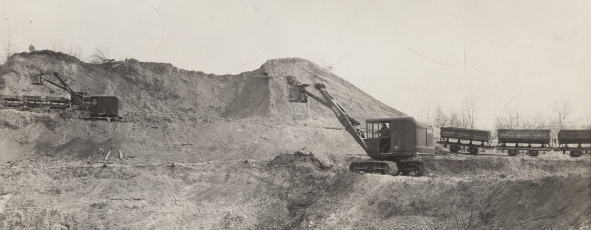

Oreminea and the Woodbury Clay Co.
A typical day in the clay pits of the Woodbury Clay Co., 1936, featuring two Lorain 40 power gas shovels. Photo credit Penn State Special Collections
Eventually, this page will contain a history of the Woodbury Clay Co. and the town of Oreminea. In the meantime, check out the only other source on the internet about the company: a photo collection from 1880-1936, from Penn State University Library Special Collections.